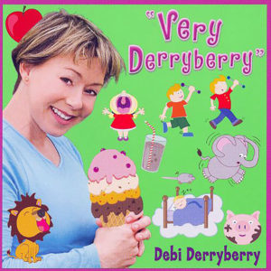
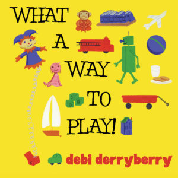

Kids Music
Go To Sleep
Go To Sleep is Debi's fifth kid's album. Children from 0 to 8 years old will love the YouTube animated videos that go with each song.
You can find it on Spotify, Apple Music and Amazon Music.
Subscribe to Debi’s new dedicated YouTube Channel “Debi Derryberry KIDS!”
Compost Bin
A song written and performed by Debi with Grammy Award winner Lisa Loeb.
Composting can help reduce trash, reduce carbon emissions and also help nourish gardens.
Gotta Go Green
Debi is best known for voicing the Academy Award nominated Jimmy Neutron. Her passion has always been music. At 9 years old she got her first guitar and has been writing and singing ever since.
Debi’s newest album, “Gotta Go Green” focuses on environmental issues and has won the prestigious NAPPA Award.
You can also find it on Amazon Music
Subscribe to Debi’s new dedicated YouTube Channel “Debi Derryberry KIDS!”
See the colorful book that goes with this music album

Very Derryberry

What A Way To Play!